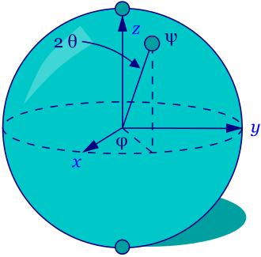

La computacion cuantica eses un paradigma de computación distinto al de la informática clásica. Se basa en el uso de qubits, una especial combinación de unos y ceros. Los bits de la computación clásica pueden estar en 1 o en 0, pero solo un estado a la vez, en tanto que el quantum bit puede tener los dos estados simultáneamente. Lo cual permite el paso a nuevas puertas lógicas que hacen posibles nuevos algoritmos.
Esta se remonta a los años 80, en los cuales ya se tenia planteada la idea de la computacion cuantica; Sin embargo no fue hasta los años 81-82 cuando el fisico Richard Feynman dentro de la primera convencion de la fisica de la computacion, propuso el uso de fenomenos cuanticos para la implementacion de mejoras dentro de algoritmos,etc. Sin embargo a inicios de los 90 fue cuando se inicio el uso de este tipo de algoritmos, en el 93 dan simon sugirio la ventaja que significaba el uso de computadoras cuanticas en cuanto a problematicas potencialmente desastrozas. En el mismo año Charles bennet, descubrio el hecho de que la teletransportacion cuantica abria paso a implementaciones de la misma en el mundo de la computacion. En el 97 se iniciaron los expetimentos en el campo cuantico, haciendo pruebas con calculos complejos. De los 2000 en adelante se sigio con la experimentacion de distintos usos de la computacion cuantica gracias al descubrimiento o logro de poder haber realizado los primeros qbits en el año de 1998-1999 gracias a investigaciones en los alamos y el instituto de masachusets.
